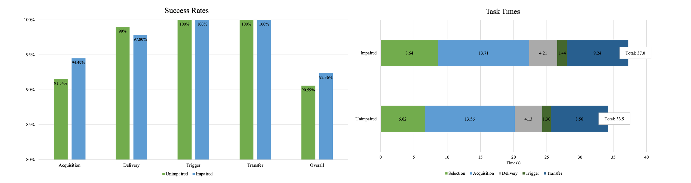
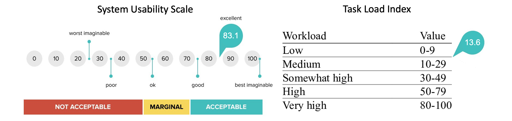

Robotic Assistance Platform
RAFv1 - Overview
The overall goal of our research is to enable people with disabilities to live productive and healthy lifestyles.
The goal of this work was to develop a robotic platform for helping people with spinal cord injuries
to perform tasks of everyday living, with a primary emphasis on feeding.
We began by developing a prototype robot-assisted feeding system. The system consisted primarily of a Baxter Research Robot
from Rethink Robotics positioned across the table from the user.
The person sits in their powered wheelchair, equipped with a monitor and a Tobii Eye Tracker 5.
An Intel L515 depth camera is mounted to the wrist
of the robot to handle perception, and the user communicates their intention to the system using their eye movements.
This initial protoype was our 'Version 1' robot-assisted feeding device, or 'RAFv1'.
RAFv1 - Detection and Localization
To detect food items on a plate, we trained a mask R-CNN object detection network to recognize symmetric, non-compliant food items such as carrots, pretzels, and celery. We used the Detectron2 framework for object detection implementation. We used AprilTag fiducial markers to register the coordinate frame for the scene and computed the grasp pose for food item acquisition.
RAFv1 - Human-Machine Interface
 We developed a custom graphical user interface (GUI) which facilitates bi-directional communication between
the user and the system. The GUI primarily displays the output of the depth camera attached to the robot
overlaid with detections from the mask R-CNN inference. The person uses their eyes to control a dwell-time cursor
to make selections on the screen. When the cursor enters the bounding box of a selectable food item, it will highlight
to indicate its interactivity. If the cursor remains in the box for 1.5 s, the item is selected. The primary benefit
of this setup is that users are in control over the most important decisions of the feeding task: what to eat and when to eat it.
We used Talon Voice as the communication layer between the user and the GUI.
We developed a custom graphical user interface (GUI) which facilitates bi-directional communication between
the user and the system. The GUI primarily displays the output of the depth camera attached to the robot
overlaid with detections from the mask R-CNN inference. The person uses their eyes to control a dwell-time cursor
to make selections on the screen. When the cursor enters the bounding box of a selectable food item, it will highlight
to indicate its interactivity. If the cursor remains in the box for 1.5 s, the item is selected. The primary benefit
of this setup is that users are in control over the most important decisions of the feeding task: what to eat and when to eat it.
We used Talon Voice as the communication layer between the user and the GUI.
RAFv1 - Mouth Detection
 To detect the user's facial keypoints, we used the face-alignment python package.
This package detects 60 facial landmarks, 12 of which belong to the mouth. We fit an ellipse
to those 12 mouth landmarks by minimizing a least-squares cost function. By comparing the ratio
of the principal axes of the ellipse to a threshold, we can get a good indication of whether the
mouth is open or closed. By opening their mouth, the user indicates when they are ready to eat.
This gives the person additional control over the pacing of the feeding task.
To detect the user's facial keypoints, we used the face-alignment python package.
This package detects 60 facial landmarks, 12 of which belong to the mouth. We fit an ellipse
to those 12 mouth landmarks by minimizing a least-squares cost function. By comparing the ratio
of the principal axes of the ellipse to a threshold, we can get a good indication of whether the
mouth is open or closed. By opening their mouth, the user indicates when they are ready to eat.
This gives the person additional control over the pacing of the feeding task.
RAFv1 - Pilot Study
In this work, we conducted a pilot study in which we presented the system to individuals
with spinal cord injuries and other mobility impairments. People were able to try out the
system, practice feeding themselves, and discover critical failure modes. The goal was to
develop a baseline for system performance as well as to capture human experience when using
the device. Five able-bodied individuals (2 male, 3 female; 25 ± 4.3 years old) and five
people with spinal cord injury or other movement disorders (3 male, 2 female, 48 ± 13.3
years old) participated in the study.
To evaluate system performance, we measured both success rates and task times for each of the
study phases. After data collection, we had participants complete the NASA Task Load Index
(TLX) and the System Usability Scale (SUS). To better understand the needs of the disability
community, we gathered qualitative feedback from participants in the form of a custom,
semi-structured, post-study interview.
We observed an average overall feeding success rate of 91.6% and an average overall task time of 34.2 ± 4.0
seconds per food item. The SCI participants gave scores of 83.1 and 13.6 on the SUS and TLX
, respectively, indicating excellent perceived usefullness and low to medium effort required to complete the task.
 
RAFv2 - Overview
The feedback gathered from participants in the pilot study directly informed the design
in the next phase of device development. The primary goals of the next iteration of the system,
dubbed 'RAFv2', were to work towards a fully portable
system contained on a wheelchair with upgraded vision and motion planning capabilities.
The RAFv2 system features a Kinova Gen3 robot with integrated
vision system mounted onto a powered wheelchair. A tablet monitor equipped with an eye tracker
is mounted on the chair as well. An additional component is an Intel D455 stereo depth camera
positioned behind the person's headrest to improve the overall system's perception capabilities.
RAFv2 - Object Detection Upgrades
To interact with more food items, we expanded our object detection dataset to include additional items. We continued to use the Mask R-CNN model in the previous device iteration, but fine-tuned the model to include images of scoopable and skewerable food items in addition to graspable items. Graspable items included pretzels, carrots, and celery. Skewerable items included strawberry, watermelon, and banana. Scoopable items included yogurt, cottage cheese, and beans. In addition to food items, we also included other dining objects such as plates, cups, bowls, forks, spoons, and knives, with a total of 16 classes in our new model.
RAFv2 - Perception Pipeline
In the previous prototype, the robot had to view the food item from overhead to compute the grasp pose, while simultaneously viewing the AR tag. This resulted in both a restrictive motion planning process as well as a clunky system operation. The addition of the second depth camera provided a constant RGB-D data stream to increase the system's perception potential. While the robot's arm camera is monitoring food items and has a low field of view, the scene camera is monitoring collision objects and other scene-related items. The point clouds of each camera stream can be stitched together to build an overall scene environment. Additionally, we implemented the MoveIt Motion Planning Library to plan collision-free motions with the robot. The video below shows an example of a collision-free motion plan using MoveIt's perception pipeline.
RAFv2 - Visual Servoing
In the initial prototype pilot study, we defined set positions for the food item handoff point. During the post-study interviews, participants mentioned they thought it would be a good idea if the robot could track the person's mouth position to adjust the handoff point as needed. To implement this feature, we used visual servoing to continually adjust the pose of the robot based on the position of the user's mouth. The desired camera pose was defined as a simple offset (~20 cm) in the z-direction from the mouth pose towards the camera. This results in the robot hovering in front of the user's face, tracking the mouth as the user moves. To implement visual servoing, we used the open-source Visual Servoing Platform Library (ViSP).
Conclusion
In this work, we present the design and development of our prototype robot-assisted feeding system and the results of our initial pilot study with members of the SCI community. We also present our second device iteration incorporating upgrades targetted toward a general purpose robotic assistance platform for performing activities of daily living. While there is significant work to be done to transition this technology toward a usable product, this work represents a significant step toward in-home robotic assistance platforms for people with spinal cord injury and other mobility impairments.
BibTeX
If you found this work helpful, please cite our conference paper!
@inproceedings{schultz2022proof,
title={Proof-of-Concept: A Hands-Free Interface for Robot-Assisted Self-Feeding},
author={Schultz, John R and Slifkin, Andrew B and Yu, Hongkai and Schearer, Eric M},
booktitle={2022 International Conference on Rehabilitation Robotics (ICORR)},
pages={1--6},
year={2022},
organization={IEEE}
}